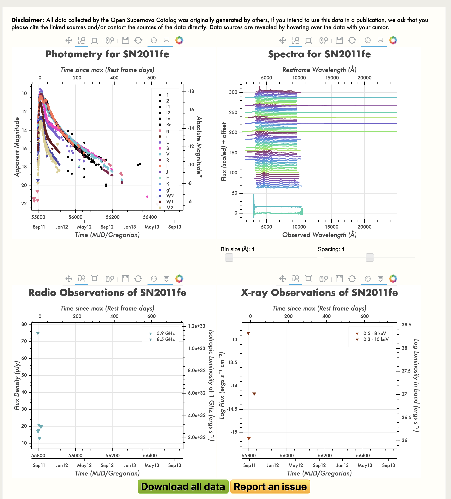

Creating New SN Templates from the Open Supernova Catalog¶
Downloading and Converting the Data¶
Download a SN from the Open Supernova Catalog (https://sne.space/) by clicking Download All Data.
From this data, make a light curve file and a spectrum.
usage:
python convJSON.py -j <input json file> -o <output SED file> -l <output lightcurve file>
To check that the lightcurve looks reasonable, in python:
from SNe-Early-Time-Classifier.util import snana
sn = snana.SuperNova('../mangle/LightCurves/Ia/SN2011fe.snana.dat')
plt.plot(sn.MJD[sn.FLT == 'r'],sn.FLUXCAL[sn.FLT == 'r'],'o')
plt.plot(sn.MJD[sn.FLT == 'I'],sn.FLUXCAL[sn.FLT == 'I'],'o')
plt.plot(sn.MJD[sn.FLT == 'B'],sn.FLUXCAL[sn.FLT == 'B'],'o')
plt.xlabel('MJD')
plt.ylabel('Flux')
To check that the spectra look reasonable, in python:
phase,wave,flux = np.loadtxt('../mangle/LightCurves/Ia/SN2011fe.sed',unpack=True)
In [27]: for p in np.arange(-10,25,3):
plt.plot(wave[phase == p],flux[phase == p])
Look for crazy jumps, which means that the units are changing from spectrum to spectrum. We should handle this more intelligently.
The spectra and lightcurve output files are then fed into the mangling code.